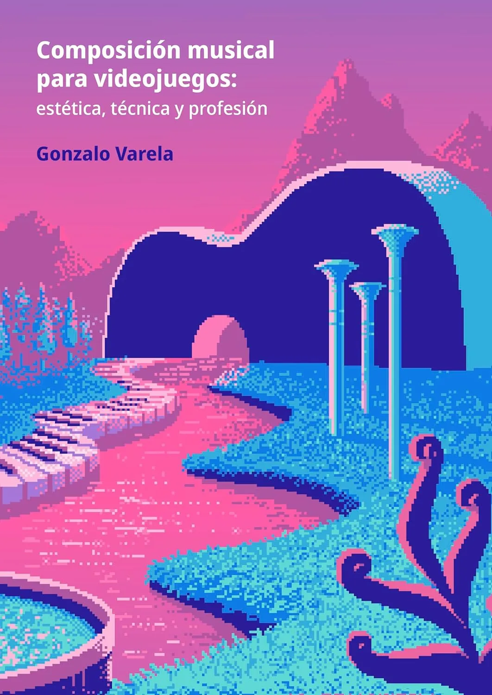

An alternative to Vertical Remixing
Writing a book is an achievement of a lifetime. As a lifelong part-time reader, I have always dreamed of writing something of my own. Recently, the great Gonzalo Varela released his book Music Composition for Video Games: Aesthetics, Technique and Profession: a deep dive into his vision of how to make a career in videogame music. This is a massive achievement, and very special for the Latin American region. I've always thought that we really need this type of literature made by creators from different regions and contexts, as we need to enrich the vision of "how to make a living from games," and different backgrounds offer different inputs that are so necessary right now.
Gonzalo honoured me with the invitation to write a small contribution to his book, and of course I said "¡NO SE DIGA MÁS!" (that's something like: "I'M SO IN").
Now you can get this book yourself and read all the pages of insane knowledge from Gonzalo and all the rest of the amazing collaborators. He allowed us to share our contributions, so I'm sharing mine with the hope that you will get the full book ASAP! Hope that this also motivates you to pursue great things, like Gonzalo did.

Excerpt from "Music Composition for Video Games"
During the development of the video game based on La Casa de Papel (Money Heist)—a project that was cancelled just one month before launch—I worked as technical sound designer and audio director. One of our main goals was to implement a dynamic music system that responded to the states of the gameplay: alert, evasion, and caution. Each state modified enemy behavior, from greater aggressiveness to specific patrol routes, in a linear level design where the player advanced from A to B while completing secondary objectives. That structure allowed us to link music to the player's progression in a very precise way.
Each mission had its own track. For the levels we used vertical remixing, adding musical layers as the player completed objectives; and for combat we resorted to horizontal resequencing, alternating between sections of different intensity. After meticulous planning, we contacted the composer Camilo Forero, to whom we gave all the narrative, artistic, and technical context. The latter allowed him to contribute creatively and propose musical implementation ideas that took advantage of the interactive possibilities, generating an interesting dialogue, in which the musical systems were fed by the composer's vision.
One of the major contributions was the decision to abandon traditional vertical remixing (layers added to a base) and instead create three complete versions of the same track with different intensities. Rather than fading in layers, we would crossfade between low-, medium-, and high-intensity versions. This saved time, as in Unreal Engine 4 it was much easier to implement a crossfade, and it gave more control over the mix, avoiding the feeling of emptiness typical of vertical remixing. The base layer tends to be a challenge for the composer, because it requires reserving space for future elements; by working with complete versions, that problem disappeared.
Since then, I rarely use pure vertical remixing; I prefer this technique, which I call fake vertical remixing (a term without copyright, but which you read here first).
Support Local Talent & Elevate Your Game Audio Craft!
This snippet is only a tiny slice of the immense value packed into Music Composition for Video Games: Aesthetics, Technique and Profession. If you are passionate about interactive music, audio design, or navigating a sustainable career in game development, this book is an absolute must-read.
Don't miss out on Gonzalo's brilliant insights and the collective wisdom of seasoned audio professionals.
Get Your Copy Today!